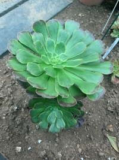

Suculentas
Aeonium Canariense Green Krantz
Luz: Precisa de luz de forma indireta. Suporta periodos de sol de menor intensidade.
Substrato: Mistura de argila/arenosa é importante para evitar o apodrecimento das raízes.
Temperatura: Os Aeoniuns ficam em dormência nas estações mais quentes. Preferem ambientes húmidos e frescos (18º a 24ºC).